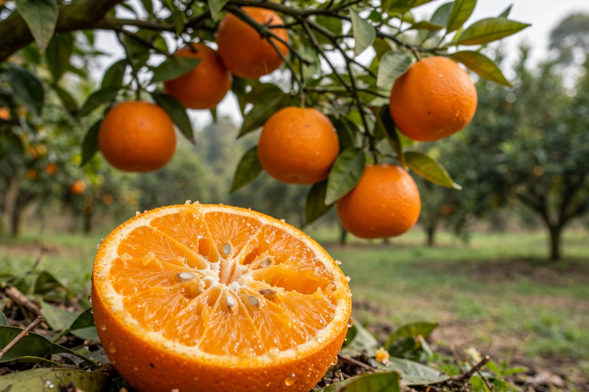

Orange (fruit)
From Wikipedia, the free encyclopedia

The orange, or sweet orange (Citrus × sinensis), is the fruit of a hybrid citrus tree — a cross between the pomelo and the mandarin — that originated in a region including southern China, northeast India and mainland Southeast Asia, and is now the most widely grown tree fruit in the world. Sweet oranges divide into common (e.g. Valencia), navel and blood oranges, plus acidless types. Brazil is the largest producer, growing much of its crop for juice, and Florida became synonymous with orange juice in the 20th century. In English the colour is named after the fruit — "orange" entered the language as the fruit's name, from Sanskrit nāraṅga via Persian and Arabic.
History
Sweet oranges were cultivated in China by at least 2500 BCE and mentioned in Chinese literature centuries before reaching Europe. Portuguese traders brought superior sweet varieties to the Mediterranean in the 15th–16th centuries — in several languages the fruit is still called some form of "Portugal". The navel orange descends from a single mutant tree found in Bahia, Brazil, in the early 19th century; being seedless, every navel tree is a grafted clone. Two trees sent to Riverside, California in 1873 founded the Washington navel industry, and one parent tree still survives.
Cultivation and trade
Oranges are subtropical and frost-tender; groves define whole landscapes in São Paulo state, Florida, Valencia and the Mediterranean. The juice industry absorbs a huge share of production, and frozen concentrated orange juice is traded as a commodity whose futures prices famously react to Florida weather forecasts. Since the 2000s, citrus greening disease (huanglongbing), spread by a psyllid insect, has devastated Florida output and threatens groves worldwide; there is no cure, only management and tolerant rootstock research.
Varieties and uses
Valencia oranges juice well and arrive late in the season; navels are the eating orange of winter; blood oranges, with anthocyanin-red flesh, are a Sicilian speciality; the pink-fleshed Cara Cara is a navel sport. Beyond juice and fresh fruit, oranges flavour marmalade, liqueurs such as Curaçao and Grand Marnier, and countless desserts, and the blossom (neroli) and petitgrain oils scent perfumes. Vitamin C made the orange a health emblem, though many fruits carry more per gram.